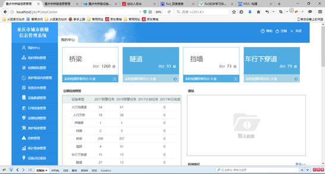

基本信息
性别：男
出生年月：1992/06
意向城市：广州or深圳or珠海or中山or东莞
教育经历
重庆理工大学
计算机科学与工程学院-软件工程
全日制本科
2011.09-2017.07
技能点
Javascript
HTML(5)&&CSS(3)
Angular1
Node.js
Phtoshop
有SVN/git等版本管理工具的使用经验；
具有fis3等前端自动化框架使用经验，了解前端工程化的相关知识；
了解计算机网络的基本知识，了解前端技术中的MV*架构，了解AMD/CMD/Commonjs规范，能根据原型图精确实现页面结构。
项目经验
重庆市桥隧信息管理系统
- 负责搭建前端框架,完成其中4个功能模块,每个模块均实现从前端页面到数据库的所有功能。
- SPA,前后端分离,5~6人团队,约十个大功能模块,工程化开发,每个功能模块均是一个小的MVC架构。
- 使用fis3集成框架优化代码,基于Angularjs框架处理数据,使用SVN进行版本管理。
- 服务器端使用java语言SSH框架、MYSQL数据库,实现了RestfulApi规范。
- 开发环境：Windows10+MyEclipse2014+WebStorm2016

2016.08-2016.12
奖项&证书
- CET-4
- 2016年校级三等奖学金
其他
曾经于2013年9月休学入伍服兵役，期间获得优秀士兵荣誉，两年后退伍复学，有责任心，能吃苦耐劳，热爱写代码，享受解决问题的快感。